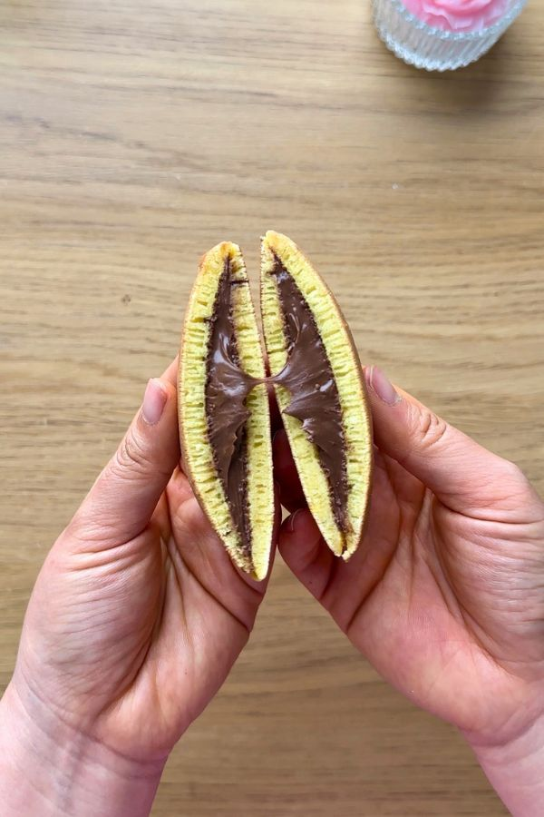
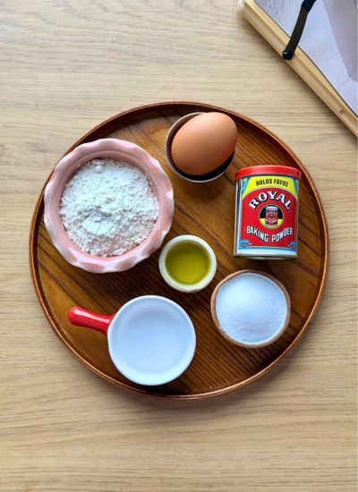
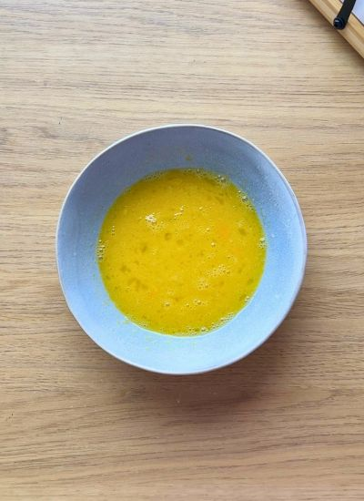
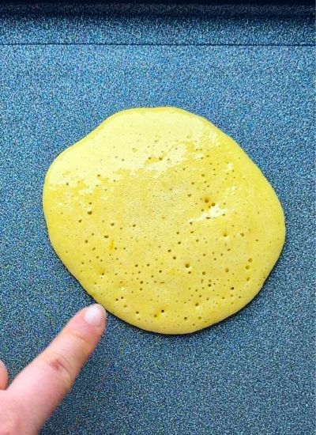
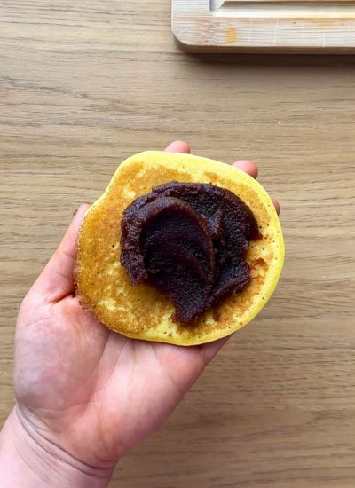
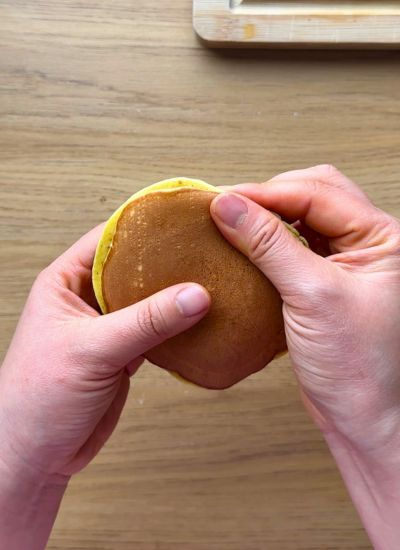

Por probar · Postre japonés
← Recetas
Dorayakis Caseros

Preparación
- En un bol mezcla el huevo, el azúcar, la miel, el agua y el aceite hasta integrar.

- Añade la harina y la levadura y vuelve a mezclar hasta una masa homogénea.

- Deja reposar la masa 30 minutos (clave para que queden esponjosos).
- Calienta una sartén antiadherente a fuego medio-bajo. Engrasa ligeramente y retira el exceso con papel.
- Haz las tortitas de una en una: vierte 2 cucharadas de masa (~8 cm), cocina ~1 min 20 s hasta que salgan burbujas, dale la vuelta y 30 s más.

- Pon el relleno en el centro de una tortita dejando los bordes libres.

- Tapa con otra tortita y presiona los bordes con cuidado. Sirve templado o frío.
